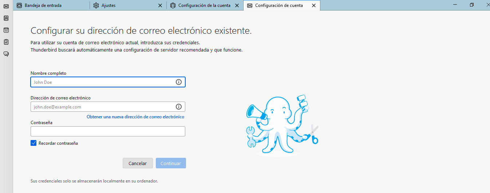

Un protocolo de email es un grupo de reglas que permite que los correos electrónicos se transmitan correctamente a través de Internet. Gracias a esos protocolos podemos enviar y recibir correos desde diferentes máquinas, redes y sistemas operativos.
El protocolo SMTP
SMTP significa Protocolo simple de transferencia de correo y es responsable de enviar mensajes de email desde el remitente al servidor de correo del destinatario. Un ejemplo de uso de SMTP sería cuando enviamos un email a otra persona.
El protocolo POP3
POP3 significa Post Office Protocol versión 3, se encarga de realizar la descarga de los mensajes de un servidor remoto a un cliente de correo electrónico local y después eliminar los mensajes del servidor remoto una vez descargados. Esto significa que luego podemos acceder a los correos incluso offline, esto es, sin necesidad de tener acceso a Internet.
El protocolo IMAP
Se usa para acceder a mensajes de correo electrónico almacenados en un servidor. Por defecto, todos los mensajes permanecen en el servidor hasta que el usuario los elimina específicamente.
Es uno de los protocolos más utilizados ya que nos ofrece la posibilidad de acceder a una misma cuenta de email desde cualquier dispositivo con conexión a Internet sin perder el acceso a todos los correos, es decir, evita que el primer cliente de correo desde el que se consulte un email lo almacene de forma local, lo elimine del servidor de correo y con ello deje de estar disponible para leer desde otros dispositivos.
Podemos configurar nuestra cuenta de correo electrónico en cada dispositivo utilizando el protocolo IMAP, lo que significa que cada dispositivo tendrá acceso a los mismos mensajes de correo electrónico y a las mismas carpetas de correo en el servidor. De esta manera, si leemos, por ejemplo, un mensaje en el móvil, el mensaje también se marcará como leído en el ordenador.
Hay que tener cuidado de no superar la cantidad de almacenamiento que nos corresponde en el servidor de correo, ya que si eso ocurre los correos no se entregarán y se devolverán a sus remitentes tras varios de intentos de entrega fallidos.
Configurar un cliente de correo electrónico
Es posible gestionar nuestros emails desde diferentes programas y dispositivos. Existen multitud de clientes de correo electrónico que podemos instalar en nuestro ordenador, por ejemplo, Microsoft Outlook, Mozilla Thunderbird, etc.
Para configurar manualmente una cuenta de correo electrónico, debemos conocer los siguientes datos, los cuales los suele proporcionar nuestro proveedor de correo electrónico:
- Servidor de correo entrante y el puerto correspondiente. Cada protocolo tiene sus propios números de puerto para conectarse y cada puerto admite un tipo diferente de cifrado.
- Servidor de correo saliente y el puerto correspondiente.
- Las opciones de seguridad necesarias para la conexión con el servidor (por ejemplo, "STARTTLS" o "SSL / TLS" y si deseas o no utilizar una autenticación segura).
La mayoría de clientes de correo permiten hoy en día configurar una cuenta de correo de manera automática. Tan solo es necesario es escribir nuestro nombre, dirección de correo y contraseña, y un asistente buscará la configuración más adecuada.
